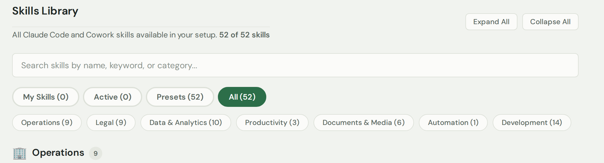
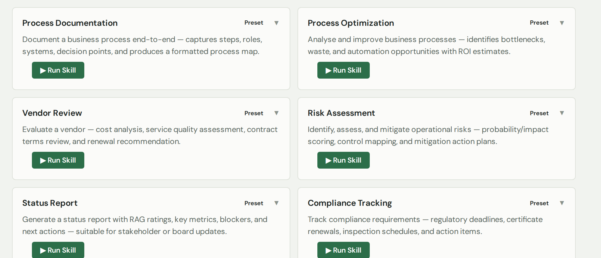

A shelf of ready-made AI helpers. Each one does a job for you — find the one you need and press go.
What this page is for
It's a library of AI skills — little helpers that each carry out a task for you, such as onboarding a customer or drafting a document. Browse what's available and run whichever one you need.
What you can do here
Browse all the skills available to you, grouped by type.
Search for one by name or keyword.
See exactly what each skill does before you run it.
Run a skill with one click.
How to find and run a skill
Use the search box, or tap a category (like Operations or Legal) or a filter (My Skills, Active, Presets, All) to narrow the list down.

Search, or filter by type, to find what you need.
Each skill is a card that explains what it does. Read it to check it's the right one.

Every card says what the skill does.
When you've found the right one, click ▶ Run Skill.
Tip:Presets are ready-made skills that come with the platform; My Skills are the ones set up specially for you.